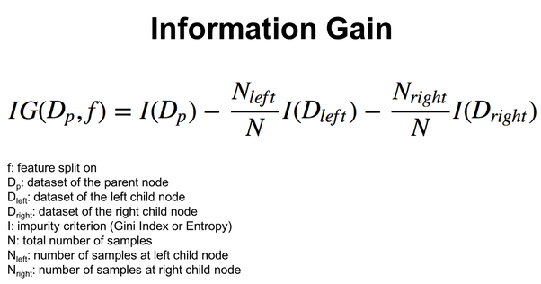
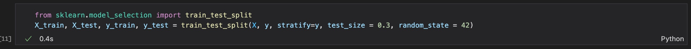
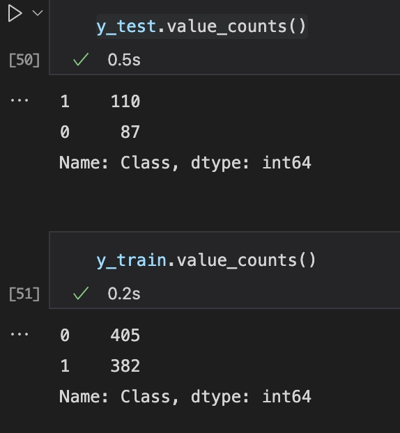
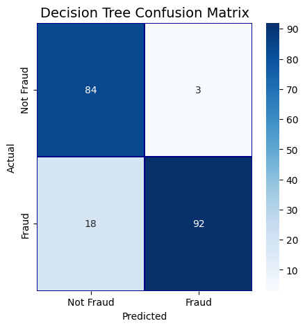
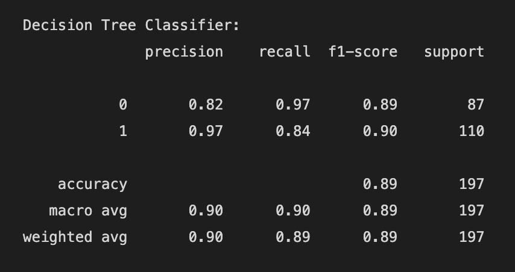
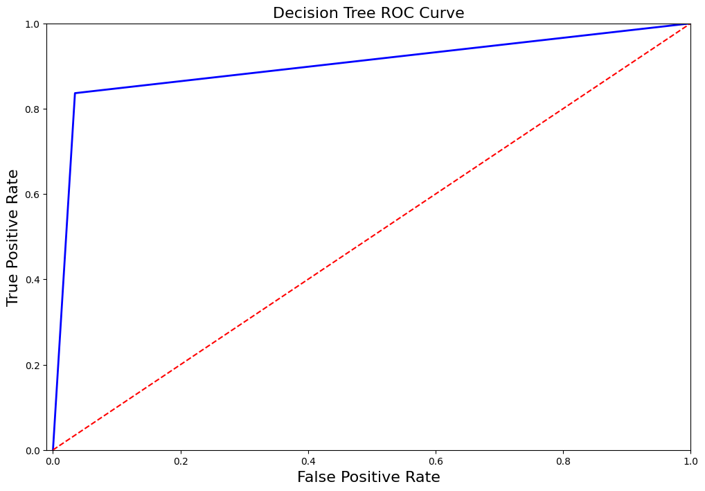

Decision Trees

Overview
Decision trees are a type of machine learning algorithm used for both classification and regression problems.
They work by recursively splitting the data based on the most informative attributes or features, in order
to create a tree-like model of decisions and their consequences.
The basic idea behind a decision tree is to build a tree-like model of decisions and their possible consequences,
with each internal node representing a test on an attribute, each branch representing the outcome of the test, and each leaf
node representing a class label or a numerical value.
To train a decision tree, the entire dataset is treated as the root node, and then it recursively splits the data
based on the most informative attribute, i.e., the attribute that best separates the classes or reduces the variance in
the target variable which are based on either information gain, entropy, gini, etc.
Predictions with a decision tree, the algorithm traverses the tree from the root node to a leaf node, based on the
attribute tests and outcomes, until it reaches a final prediction. The prediction can be a class label in case of classification,
or a numerical value in case of regression.
The commonly used metrics in decision trees to determine the best split of data at each internal node
- Gini Index - It measures the probability of misclassifying a randomly chosen data point. It ranges from 0 to 1, where 0 means all the data points belong to the same class, and 1 means the data points are uniformly distributed across all classes
- Entropy - It is measure of purity that is commonly used in decision trees. Entropy measures the degree of disorder or uncertainty in a set of data. It ranges from 0 to 1, where 0 means all the data points belong to the same class, and 1 means the data points are equally distributed across all classes
- Information Gain - It is a measure of how much the entropy or impurity of the data decreases after a split. It is used to determine which attribute or feature to choose as the splitting criterion. The attribute or feature with the highest information gain is chosen as the splitting criterion, as it provides the most informational power to separate the classes or reduce the variance in the target variable


Code Explanation
The basic idea is to partition the dataset into two subsets: one for training the model and another for testing its accuracy,
which is done using one of the libraries provided "from sklearn.model_selection import train_test_split".
The training set
is used to fit the model parameters, while the test set is used to evaluate the performance of the trained model on new,
unseen data. In our case due to the imbalanced dataset(where it had just 492 fraudulent cases) we will use sampling method in this case
downsampling to make the majority and minority class label have same proportion. Here the split is done using a paramater stratify
which basically returns train and test with same proportions of class labels
as the input dataset. Moreover the train and test is split in 70%-30% as describe in the parameter test_size
Where random_state defines the random sampling of the train and test datasets and produces same results every time it is run.

Cleaned Data

Training & Testing Data


Our problem statement is to train our model to identify the fraudulent transactions on the unseen data, a classification algorithm will identify and classify the transactions as fraudulent or non-fraudulent. Let's see this using a Decision Tree Classifier. After fitting the Decision Tree model against our training data shown above, the next step is to make prediction on unseen data which is testing data.
Confusion Matrix
From the confusion matrix above, we get the idea of our True Positive Rate and True Negative Rate, Accuracy, Senstivity, Specificity. To check if our model is performing well, there is cost associated to whether having a false negative case or false positive case is costly for us. Which means predicting a fraud case as non-fraudulent (i.e false negative) or non-fraud as fraud (i.e false positive) is beneficial for us, In this case we will want to decrease the false negative cases which in turn is costly for us when detecting on unseen data, as we will incur a financial loss due to the cases which were not detected as fraudulent. From the above confusion matrix, there are less false negatives cases than it was in our Naive Bayes Classifier, thus decision tree did a great job in identifying more true fraudulent cases. The most common metrics to use for imbalanced dataset are:
- F1 score
- Precision
- Recall
- AUC score (AUC ROC)
- Average precision score (AP)
Let's have a look at our performance metrics.


Decision Tree Visualisation
Decision Tree on full dataset
Code
You can find code for the Decision Tree Classifier covered in this space here:
- Classification - Naive Bayes and Decision Trees
- Decision Trees Visualisation
-
Dataset
Conclusion
From the performance metrics we can conclude that Decision Trees did a great job than Naive Bayes in indentifying most of the fraudulent transactions 92 out of 110, although we can also test against upsampled dataset or by doing feature importance to increase our recall score such that model is more accurate in predicting fraudlent transactions. Our Decision Trees model gave similar accuracy of 89%. Though decision tree had a better recall score for fraudulent transactions. In case of fraudulent transactions recall is better favoured than precision because there is no harm in alerting a non-fraud transaction as fraud, but there will be more loss if a fraud transactions is labelled as non-fraud.